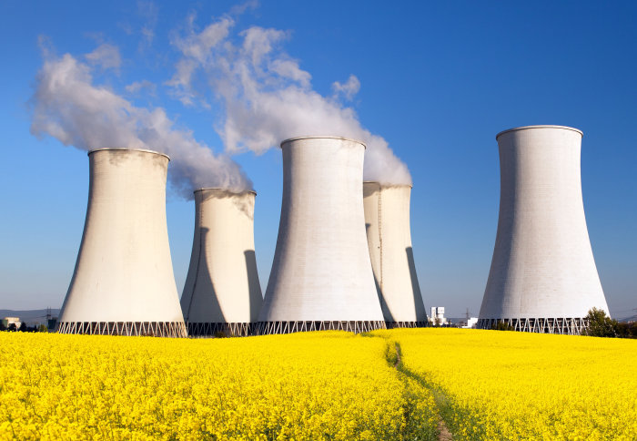

Basics of a nuclear reactor
The basics behind nuclear fission found in commerical nuclear power plants.
Learn more
Civil nuclear energy production has been on the decline throughout Europe, with countries like Germany completely phasing out their nuclear reactors in 2023. However, recently in the UK, the government has started to look into building new, smaller nuclear reactors across the country. In addition, France has scrapped their previous aim to reduce nuclear energy reliance from 70% of their energy production to 50% in 2023. So the question is, why are European countries so divided over nuclear energy?
Below are two topics which outline the basics of a nuclear reactor and the different safeguards in place to protect the public.
The basics behind nuclear fission found in commerical nuclear power plants.
Learn moreAddressing a few common misconceptions of nuclear power industry.
Learn moreA look into soem of the safeguards put in place which the general public may not be aware of.
Learn more